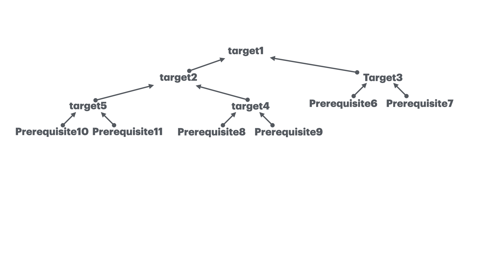

Motivation
The make program is intended to automate the mundane aspects of transforming source code into an executable.
The advantages of make over scripts is that you can specify relationships between the elements of your program
to make. With the knowledge of the relationships and timestamps it figures out the necessary steps to be
redone to produce the desired program each time.
A simple Makefile
The specification that make uses is saved in a file named makefile. Here is a makefile to build the
traditional “Hello, World” program.
hello: hello.c
gcc hello.c -o hello
To build the program we execute make by typing:
$ make
This will cause the make program to read the makefile and build the first target it finds there.
Targets and Prerequisites
A makefile contains a set of rules to build an application. The first rule seen by make is used as the
default rule. A rule consists of three parts: the target, its prerequisites, and the command(s) to peform:
target1: prerequisite1 prerequisite2
command1
command2
target2(=prerequisite1): prerequisite3 prerequisite4 prerequisite5
command3
target3(=prerequisite2): prerequisite6 prerequisite7
command4
target4(=prerequisite3): prerequisite8 prerequisite9
command5
target5(=prerequisite4): prerequisite10 prerequisite11
command6
The target is the file that must be made. The prerequisites or dependents are those files that must exist before the target can be successfully created. And commands are those shell commands that will create the target from the prerequisites.
A Dependecy Graph

When make evaluates a rule, it begins by finding the files indicated by the prerequisites and target.
If any of the prerequisites has an associated rule, make attempts to update those first. Next, the target
file is considered. If any prerequisite is newer than the target, the target is remade by executing the
commands. If any of the commands generates an error, the building of the target is terminated and make
exits.
The previous example assume that:
All the project source code and the makefile are stored in a single directory.
The
makedescription file is called makefile, Makefile or GNUMakefile.The makefile resides in the user’s current directory when executing the
makecommand.